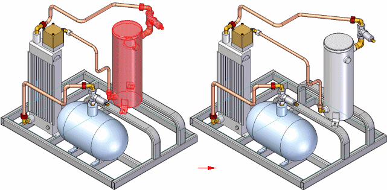

Move Components command
Moves or rotates one or more parts, subassemblies, or assembly bodies in an assembly. You can move or rotate the selected components, or a copy of the selected components.

When assembly bodies are in the select set, specific rules apply. For more information, see the Moving and mirroring rules for assembly bodies Help topic.
You can specify whether the positioning relationships internal to the set of components are maintained or deleted.
The Move Components command bar guides you through the process of moving or rotating a set of parts:
-
Define the relationship option for the set of components.
-
Specify the move, rotate, and copy options.
-
Select the components.
-
Define the from and to points, or the rotation axis and angle.
Defining the relationship option for the set of components
You use the Move Options dialog box to specify how you want the assembly relationships internal to the select set of components treated. You can maintain the assembly relationships, delete the assembly relationships, or delete the assembly relationships and ground the components.
Relationships between the set of components being moved or rotated and other components in the assembly are automatically deleted when using this command.
Specifying the move, rotate, and copy options
When you start the command, you must define whether you want to move or rotate the components, and whether you want to move or rotate the original components or a copy of the components.
The steps on the command bar change depending on whether you set the Move Components or Rotate Components option. For example, when you set the Move Components option, you define a from and to point to move. When you set the Rotate Components option, you define a rotation axis and angle.
When you set the Copy Components option, a copy of the selected components is moved or rotated.
Selecting the components
You can select the components in the graphic window or in PathFinder. When selecting components in the graphic window, you can drag a fence.
You can also select the components before starting the command. For example, you can use the Select Visible Parts option on the Select Tool command bar to select all the visible parts, then start the Move Multiple Parts command.
Defining the From and To points, or the rotation Axis and Angle
As discussed earlier, the steps on the command bar change depending on whether you set the Move Components or Rotate Components option.
-
Move components
When you set the Move Components option, you can select keypoints to define the From and To points, define an x, y, or z offset value, or use the Get Point option on the command bar to get the x, y, and z coordinates of a keypoint, then edit the value of one or more of the axes.
If you have defined a coordinate system in the assembly, you can also specify whether the x, y, and z values are relative to the model space or a coordinate system.
-
Defining keypoints
You can select keypoints on parts to define the From and To points.
-
Defining an x, y, or z offset value
If you want to offset the components a known x, y, or z offset value, you can press the Enter key to lock the From point at 0, 0, 0, then type the known offset value in the command bar to define the To point.
-
Using the Get Point option
This option is useful when defining the To point, and you want to define a specific offset value from a keypoint on a component. You can click the Get Point option, then click a keypoint. The keypoint coordinates are entered into the x, y, and z boxes on the command bar, which you can then edit to define the To point.
-
-
Rotate components
When you set the Rotate Components option, you can define the rotation axis by selecting an element or by defining two keypoints. With either method, you must also specify an angle value to rotate the parts.
New data organization
The new data that is created by moving multiple parts is organized in PathFinder according to its data type. New occurrences of parts and subassemblies are added to a new Assembly Group entry in PathFinder. Assembly bodies, such as weld beads and protrusion assembly features are added to the Assembly Features section of PathFinder.
How do I
Move a part in an assemblyMove multiple parts in an assembly
Check for interference between parts in an assembly
Learn more
Analyzing movement and detecting collisions in assembliesMoving and mirroring rules for assembly bodies
Checking interference on parts
Look up more details
Move Components command barMove Options dialog box
Drag Component command
Steering Wheel
Check Interference command
Drag Component command bar
Analysis Options dialog box
Check Interference command bar
Report page (Interference Options dialog box)
Interference Options dialog box
Options page (Interference Options dialog box)